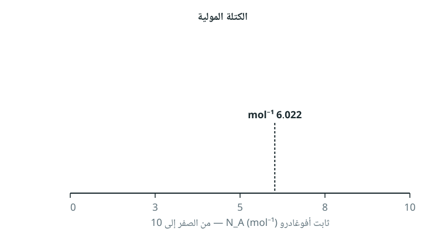

الكتلة المولية
Molar mass
الكتلة المولية هي كتلة مول واحد من المادة، ورمزها M ووحدتها g/mol أو kg/mol. تُحسب من الكتل الذرية النسبية، وهي معامل التحويل بين الكتلة المقيسة وعدد المولات.
الكتلة المولية للمادة هي كتلتها مقسومة على كميتها بالمولات، ورمزها M، ووحدتها في النظام الدولي كيلوغرام لكل مول، ويُستعمل عملياً الغرام لكل مول. وهي تُحسب بجمع الكتل الذرية النسبية للذرات في الصيغة الكيميائية، مضروبةً في ثابت الكتلة المولية الذي قيمته 1 غ/مول. وبعد مراجعة 2018 للنظام الدولي، لم يبقَ ثابت الكتلة المولية تاماً تماماً، لأن الكتلة الذرية للكربون-12 صارت مقيسة لا معرَّفة، لكن انحرافه عن 1 غ/مول أقل من 10⁻⁹ نسبياً فلا يظهر في الحسابات العملية. والكتلة المولية هي الجسر الذي يحوّل ما يُوزن على الميزان إلى ما يُعدّ بالمولات، وهي لذلك أساس كل حساب كيميائي كمّي. مثال: الكتلة المولية للماء 2×1.008 + 15.999 = 18.015 غ/مول، فـ18.015 غ من الماء تساوي مولاً واحداً.
كيف تعمل الظاهرة؟
الكتلة المولية تعمل كمعامل تحويل بين مقياسين: مقياس الكتلة الذي تقيسه الميزان، ومقياس الكمية الذي تعدّه المعادلات الكيميائية. حين تُقسم كتلة مقيسة بالغرام على الكتلة المولية بالغرام لكل مول، ينتج عدد المولات، وهو العدد الذي تتعامل به المعادلة الموزونة. والعكس: عدد مولات معلوم من المعادلة يُضرب في الكتلة المولية فينتج كتلة قابلة للوزن. هذا التحويل هو ما يجعل الحساب الكيميائي ممكناً عملياً، لأن المعادلة تخبرنا بنسب المولات لا بنسب الكتل. والكتلة المولية تُحسب جمعاً من الكتل الذرية النسبية، وهي قيم جدولية معتمدة لا تُقاس في كل تجربة.
العلاقة بالأرقام
M = m/n بوحدة g/mol. وn = m/M. والكتلة المولية لمركّب = Σ(ν_i·A_r,i) × 1 g/mol. وعدد الجزيئات N = (m/M)·N_A. مثال عددي: H₂SO₄: 2×1.008 + 32.06 + 4×15.999 = 98.079 غ/مول؛ و49.04 غ ÷ 98.079 = 0.500 مول؛ و0.500 × 6.022 140 76×10²³ = 3.011×10²³ جزيئة. وللغاز المثالي ρ = p·M/(R·T): الهواء بكتلة مولية 28.97 غ/مول عند 101 325 Pa و288.15 K يعطي 1.225 kg/m³.
مفاهيم متقاربة
الكتلة المولية والكتلة الجزيئية يتساويان عددياً ويختلفان في الوحدة: الأولى g/mol والثانية بلا وحدة بوحدة u. والكتلة المولية ليست الكتلة الذرية النسبية، فالأخيرة لذرة واحدة. وليست الكتلة الصيغية: المركّبات الأيونية لا تحتوي جزيئات، فتُحسب كتلتها المولية من الصيغة التجريبية لا من جزيء. والكتلة المولية ليست الكثافة ولا الوزن النوعي، وكلها مقادير كتلة لكن بمقامات مختلفة: كمية مادة، حجم، حجم مرجعي.
حدود التطبيق
الكتلة المولية غير معرّفة بدقة للمواد ذات التوزيع الجزيئي الواسع، كالبوليمرات والبروتينات الكبيرة، حيث تُستعمل الكتلة المولية المتوسطة العددية أو الوزنية بدلاً من قيمة واحدة. وفي الخلائط تُستعمل كتلة مولية متوسطة تُحسب من الكسور المولية، وهي ليست كتلة أي مكوّن. ولا تُستعمل الكتلة المولية للتنبؤ بالخواص الفيزيائية، فمركّبان بكتلة مولية واحدة قد يختلفان في الكثافة واللزوجة اختلافاً كبيراً بسبب البنية.

| الكمية | القيمة | المصدر |
|---|---|---|
| ثابت أفوغادرو N_A | 6.022 140 76×10²³ mol⁻¹ | [2] |
| الكتلة المولية للماء | 18.015 g/mol | [1] |
المصادر
- 1 The International System of Units (SI), 9th edition (2019) — BIPM — Bureau International des Poids et Mesures (2019). www.bipm.org/en/publications/si-brochure · اطُّلع عليه 2026-11-21
- 2 CODATA Value: Avogadro constant — NIST — CODATA 2022 recommended values (2024). physics.nist.gov/cgi-bin/cuu/Value?na · اطُّلع عليه 2026-11-21
- 3 CODATA Value: Boltzmann constant — NIST — CODATA 2022 recommended values (2024). physics.nist.gov/cgi-bin/cuu/Value?k · اطُّلع عليه 2026-11-21
استشهد بهذا المصطلح
الصيغتان مبنيتان من بيانات الصفحة نفسها: العنوان والتاريخ ورابط النسخة المنشورة.
الكتلة المولية — Molar mass. (2026). ديوان المعرفة — انفراد. https://infiradev.com/diwan/terms/term-molar-mass.html
@misc{term-molar-mass2026,
title = {الكتلة المولية},
titleaddon = {Molar mass},
howpublished = {{ديوان المعرفة — انفراد} — مرجع علمي عربي},
year = {2026},
url = {https://infiradev.com/diwan/terms/term-molar-mass.html},
urldate = {2026-11-26},
note = {مراجعة علمية: hermes (مراجعة معتمدة 2026-11-26)}
}
راجعه: hermes (مراجعة معتمدة 2026-11-26) · 2026-11-26 · آخر تحديث 2026-11-21